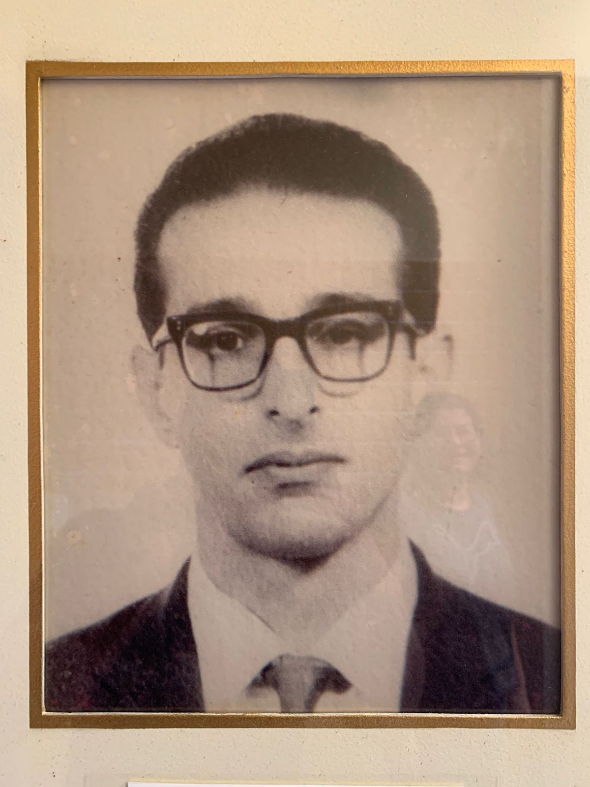
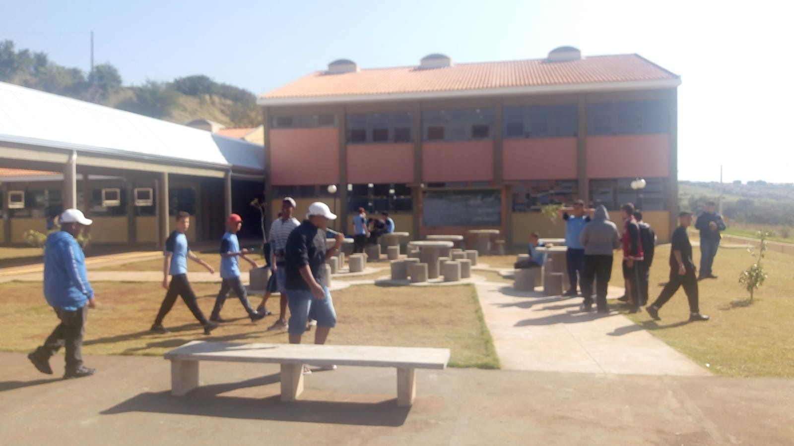
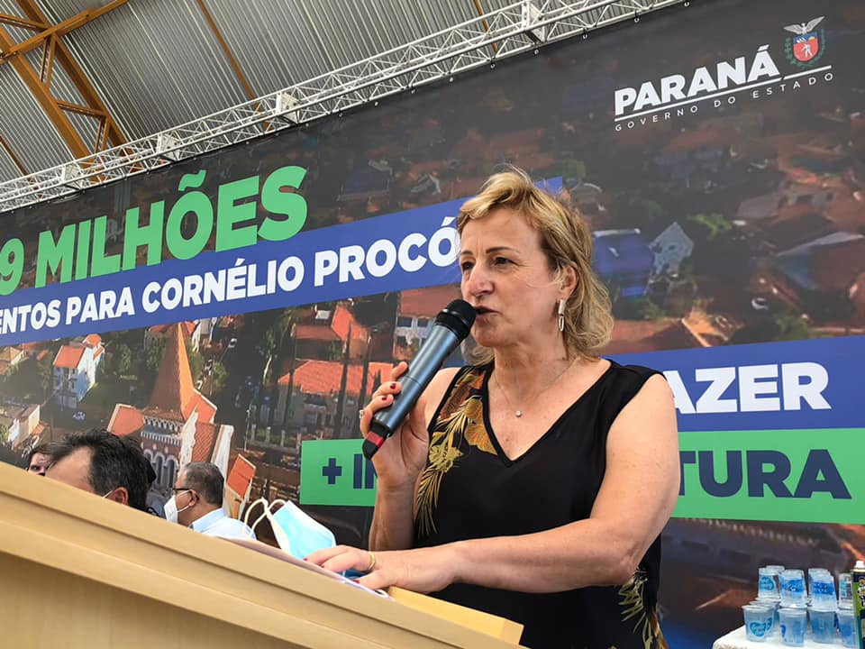

História do Professor William Madi
WILLIAM MADI
Nascido em São Paulo, capital, em 07 de agosto de 1926, falecendo em 14 de Outubro de 1995. Filho de Jorge Cury Madi e Maria Abda Madi. Casou-se em 28 de Outubro de 1950, com Natália Bechara e teve 3 filhos: Lílian Madi, Wilson Madi e Jorge Cury Madi Neto.
Cursou Letras Anglo I Portuguesa, na Faculdade de Filosofia,Ciências e Letras de Cornélio Procópio, tendo concluído em 1969. Cursou Pedagogia, tendo optado por Orientação Educacional e Administração Escolar, concluindo em 1973.
Professor concursado, ingressou no Magistério em 06 de junho de 1966, nas disciplinas: Português e Inglês. Lecionou no Colégio Estadual “Castro Alves”, até a data de sua aposentadoria. Exerceu a função de Diretor Auxiliar, no Colégio Estadual “Castro Alves” a partir de 05/11/70.
Dedicou-se ao Magistério com profissionalismo, amor e satisfação, realizando um projeto pessoal de vida.

Mapa da cidade natal
Professor William Madi nasceu no dia 07/08/1926. Aqui abaixo está o mapa para você conferir a cidade:
A Escola
Público atendido Estudantes do Ensino Fundamental e/ou do Ensino Médio matriculados nas instituições de ensino da rede pública estadual do Paraná. A composição das turmas nas instituições de ensino que ofertam Educação Integral ocorre de acordo com a Resolução n.º 4527/2011 – GS/Seed, que fixa o número de estudantes para as instituições de Ensino Fundamental e Médio. 
Inauguração
Foi inaugurado dia 17/02/2022 o Colégio Estadual William Madi, um grande investimento de R$ 3,8 milhões para atender crianças e adolescentes com educação gratuita e de qualidade. O que considera mais importante é que o novo Colégio está localizado em uma área importante da cidade em que vai atender estudantes de famílias de trabalhadores de Cornélio Procópio.

Matérias
A Educação em Tempo Integral - Turno Único, da rede pública de ensino do Paraná, apresenta-se com uma nova lógica na organização do tempo escolar, que garante a formação integral dos sujeitos (ética, cultural, política, estética, física e cognitiva), levando em consideração suas especificidades, sua história e sua cultura.
Objetivo
Ampliar tempos, espaços escolares e oportunidades de aprendizagem, visando à formação integral das crianças, dos adolescentes e dos jovens matriculados nas instituições de ensino da rede pública estadual do Paraná.
Matriz curricular
A proposta da Educação em Tempo Integral - Turno Único (ETI), da rede pública de ensino do Paraná, propõe um currículo integrado, organizado em uma Matriz Curricular, por meio de disciplinas da Base Nacional Comum e disciplinas e componentes curriculares da parte diversificada (Ensino Fundamental) ou parte flexível (Ensino Médio), conforme disposições legais comuns à Educação Básica, cujos fundamentos conceituais, metodológicos e avaliativos possibilitam aprendizagens significativas. O Componente Curricular Eletivo é escolhido e definido pela comunidade escolar, considerando as necessidades e os interesses dos estudantes.
Os Cursos são
Portugues, Matematica, Ingles, Ciencias, Geografia, Historia, Educação fisica, Vivencia Corporal, Pratica Experimental, Protagonismo, Emprendedorismo, ensino Orientado, Projeto de Vida, Programação e Tecnologia Computacional. Educação Financeira, Pensamento Computacional.
CLICK AQUI E CONHEÇA A EQUIPE DA ESCOLA 
Abaixo está o mapa da Localização do Colégio:
Vídeo
Video Atividade de Musica e Arte Clipe Musical em Homenagem as Mães